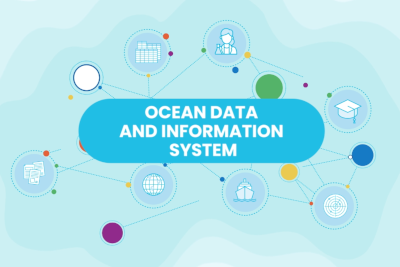
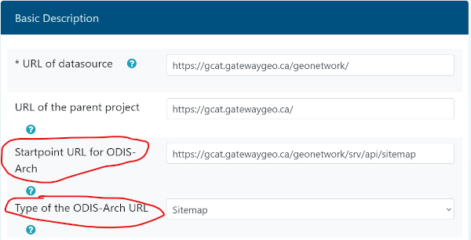

Getting Started with ODIS: How to Join the ODIS Federation#
Quick Steps#
Hello World#
This page describes - at a high level - how a digital system with access to the Web can link itself into the ODIS Federation.

Any system providing data (in a broad sense, including documents, software code, etc) and/or services that are relevant to ocean science, management, policy, commerce, or other ocean-relevant activities is welcome to connect to ODIS. A light curation of ODIS nodes is performed by IODE’s team, and the entire Federation self-regulates, voicing concern if they believe nodes are sharing data that is invalid, misleading, or otherwise of concern.
Background#
In an increasingly data-driven digital landscape, sharing information about your resources on the web has become a vital endeavor. Structured data, presented through JSON-LD, offers an approachable means to achieve this goal, providing context and linked data in a format easily understood by both humans and machines. Through the incorporation of the schema.org framework, a collaborative initiative designed to create, maintain, and promote schemas for structured data on the internet, this guide will help you navigate the process of sharing JSON-LD for your web resources. In this guide, we’ll walk you through the key steps to effectively share JSON-LD on the web for your resource, empowering you to enhance discoverability and semantic context for your valuable content.
Note
Learn more about Structured Data for the Web and JSON-LD
The importance of sharing (meta)data about your digital assets - in a form that others can understand - cannot be underemphasised: without a common approach, digital assets are often invisible to one another, harming collaboration, due diligence, and informed action. The International Oceanographic Data and Information Exchange (IODE) helps provide ODIS as way for ocean data entities around the world to share oceans information through a common platform.
Registering Your Organisation#
Organisations which contribute to the ODIS Federation need an unambiguous identity on the web. This is not (necessarily) the same as your organisation’s website: A web identifier is focused on machine-readable metadata and will not change (even if your organisation changes its name). It’s important that this digital identity is sanctioned by your organisation’s leadership and administration, such that it is an official identifier and kept up to date (like an ORCID for your organisation).
OceanExpert#
We recommend that your organisation creates and maintains an OceanExpert ID. OceanExpert (OE) is maintained by the IODE and is deeply integrated into ocean data flows. For example, OE is - itself - an ODIS node, thus any data you add there will automatically be shared through the ODIS Federation.
Creating an entry is a matter of a few minutes, and requires no technical skill beyond using a web browser. However, it is key that your organisation is aware of the OE entry and approves its creation. Additionally, an individual should be nominated to maintain the entry.
Caution
After initially creating your OceanExpert ID, please give 1 business day before trying to use that login in other tools, such as when logging into the ODIS Catalogue (as your OE account must first be approved).
Registering your (meta)data node(s)#
Now that your organisation has an identifier on the web (OceanExpert ID), you can register the data systems you wish to connect as ODIS nodes. The ODIS Catalogue of Sources (ODISCat) is the system that we use to register, describe, and interlink data sources that feed into ODIS.
Note
One organisation can operate many such nodes (e.g. for different types of data, services, etc).
To register a source, simply go to the ODISCat website, login with your OE credentials, and create an entry. This should take around 10 minutes.
ODISCat has a dedicated field to let the ODIS Federation know where your metadata is. Leave that blank for now: we’ll come back to this after we prepare content to share via ODIS.
Note
If the person responsible for maintaining your ODISCat entry changes, they should contact the ODIS team to transfer the role to another OceanExpert account.
Preparing content#
All ODIS nodes share metadata about their holdings (datasets, documents, organisational information, etc) and services (APIs, portals) by exposing structured metadata catalogues over the web.
The first step towards joining ODIS is to generate metadata about your digital holdings as JSON-LD files, using schema.org Types and properties. Guidelines on how to shape these files is available here, and we provide a library of examples in the odis-in repository, and templates in this book to help nodes shape their submissions. Note, however, that any valid schema.org Type can be used to share metadata through the Federation.
Tip
Watch a video on “What is JSON-LD?” here
Note
To create and test an initial link to ODIS, you don’t need to create metadata for all your holdings - a small test set will do.
Additional semantics (i.e. beyond what schema.org can offer) can be embedded into these files using schema.org’s additionalProperty, DefinedTerm, or similar property. An example JSON-LD template for ODIS that leverages the additionalProperty parameter can be found here.
You can store these files anywhere on the web (under your control), as long as they are accessible using standard web protocols. Many ODIS partners that have landing pages for their data sets or other digital assets choose to embed the JSON-LD inside the record’s HTML landing page, such as:
<script type="application/ld+json">
{
"@context": "https://schema.org/",
"@type": "Dataset",
"@id": "https://incois.gov.in/essdp/ViewMetadata?fileid=524fd72e-6b2f-4025-94ea-361dce0e9165",
"name": "Role of Antarctic krills in the biogeochemical cycle in the Indian Ocean sector of Southern Ocean",
"description": "The Antarctic krill is the largest euphausiid, widely distributed in the Southern Ocean...",
....
}
</script>
Tip
Today there exists many catalogue software that automatically generates & embeds the necessary JSON-LD into the record’s landing page for you, such as: GeoNetwork (since version 3.10), pygeoapi (since version 0.15.0), CKAN (with the DCAT extension enabled for the “schemaorg” profile), and many others.
Reusing ODIS patterns#
ODIS Partners have co-developed a library of JSON-LD/schema.org patterns (i.e. extended examples of how to format JSON-LD files using schema.org Types and properties) to help each other share content in a normative way. In general, these patterns give more complete examples of normative usage, beyond those offered by the schema.org pages.
If you have digital assets that fall within the patterns in our book, then reusing them is typically just a question of copy, paste, “fill in the blanks” and then verifying the validity of the resulting files with, e.g., the schema.org validator.
We strongly recommend all partners keep their JSON-LD files as close to the recommended pattern as possible. The more “in pattern” your content is, the more likely it will be discovered and (re)used in predictable ways.
Requesting modifications to existing ODIS patterns#
Sometimes, an existing pattern is close you what you need, but there are modifications that would make it a better fit (e.g. modifying spatial metadata to include depth more explicitly). Many of these modifications are likely to be useful to the whole Federation, thus we encourage you to post an issue on our odis-arch GitHub repository. There, you can describe the modification and how it would help improve the description & discovery of ocean data, and then the ODIS team can help shape, verify, and integrate it into the core recommendations.
Requesting new patterns#
If there are no patterns that match your needs, or you feel that you’re stretching an existing pattern too far, you can request help from the ODIS coordination team to help craft a new one. This process is an excellent opportunity for the broader ODIS partnership to help review and co-develop the pattern, promoting wider interoperability. As above, post an issue on our odis-arch GitHub repository describing the need, and ideally providing some example (meta)data that can be adapted.
What follows will be a few rounds of specification development, before we add the new pattern to the ODIS Book for all to benefit from and interoperate over.
Creating a Sitemap#
Now that you have content to share, you’ll have to tell other agents on the web where to find it. This should be done by setting up a sitemap, that points to each JSON-LD file you wish the ODIS Federation to be aware of.
An example sitemap from an ODIS node can be seen here
Note
If you have many thousands of entries, or you have subsets of links to share, you can use a ‘sitemap of sitemaps’ approach, where one sitemap can point to several others. Here is an example ODIS node with a sitemap index.
Frequency of change#
Add the <changefreq> metadata for each sitemap record, for how often you expect
records in your sitemap to change - this will tell systems like ODIS how often to
reindex your holdings. Possible values are: always, hourly, daily, weekly, monthly,
yearly, never. Here is a snippet from a sitemap:
:
<?xml version="1.0" encoding="UTF-8"?>
<urlset xmlns="https://www.sitemaps.org/schemas/sitemap/0.9">
<url>
<loc>https://example.org/landingpage1</loc>
<lastmod>2024-06-10</lastmod>
<changefreq>monthly</changefreq>
</url>
<url>
<loc>https://example.org/landingpage2</loc>
<lastmod>2024-01-31</lastmod>
<changefreq>monthly</changefreq>
</url>
</urlset>
Tip
There are many sitemap validator websites that you can leverage, to make sure that you have generated your sitemap properly, and that it can be read by machines.
Coming full circle: Registering your Sitemap in ODISCat#
This is arguably the most important step, as the connection between your node & ODIS will be made through the ODISCat entry that you setup earlier through the steps above, but there are 2 critical fields to fill for the ODIS connection, as follows:
log back into ODISCat with your OceanExpert ID
click on the “search” link in the top-left
click on the “Show my records” link on the Search page
click on the “edit record” icon (the pencil) for your record
click on the “Basic Description” tab
in the “Startpoint URL for ODIS-Arch” field, paste the url to your sitemap.xml file
in the “Type of ODIS-Arch URL” field, select “Sitemap”

That’s it, now your node’s records can be harvested by ODIS! ✅
Note
If your new entry in ODISCat states that This resource is offline: ODISCat checks your
“Datasource URL” daily, so if you have just created a new entry in ODISCat, give it a day
and check back then to see if the online/offine status is correct.
Frequently asked questions (FAQ)#
How to provide feedback to ODIS?#
You can use the odis-arch issue tracker on GitHub, to file any issues or questions for the ODIS team.
How do I see my records, after completing my ODISCat entry?#
The ODIS Dashboard can be used to monitor your node inside the ODIS graph.
In terms of seeing your records in the results of the ODIS front-end search: we will use the frequency values set in your sitemap, to automated the harvesting and display of your records in the search results.
Where are JSON-LD examples that I can use?#
The ODIS Book has good examples of each of the ODIS patterns of JSON-LD. Another excellent resource is the odis-in repository where all of the JSON-LD templates often drafted together with partners are stored, for example see a datasetTemplate there.
Does ODIS have a SPARQL endpoint?#
Yes, the SPARQL endpoint for ODIS is: http://graph.oceaninfohub.org/blazegraph/namespace/oih/sparql
You can find more help on how to use the ODIS SPARQL endpoint here. An interface such as Yasgui can be used to generate your queries.
Does ODIS have a JSON endpoint?#
A JSON endpoint is in discussion for ODIS. ODIS does have Parquet files that are automatically generated for each node (you can get the url for that Parquet file by selecting a node in the “ODIS Node Summary” section of the Dashboard.
How often does ODIS index my records?#
ODIS will use the frequency values set in your sitemap, to automate the harvesting and display of your records in the search results.